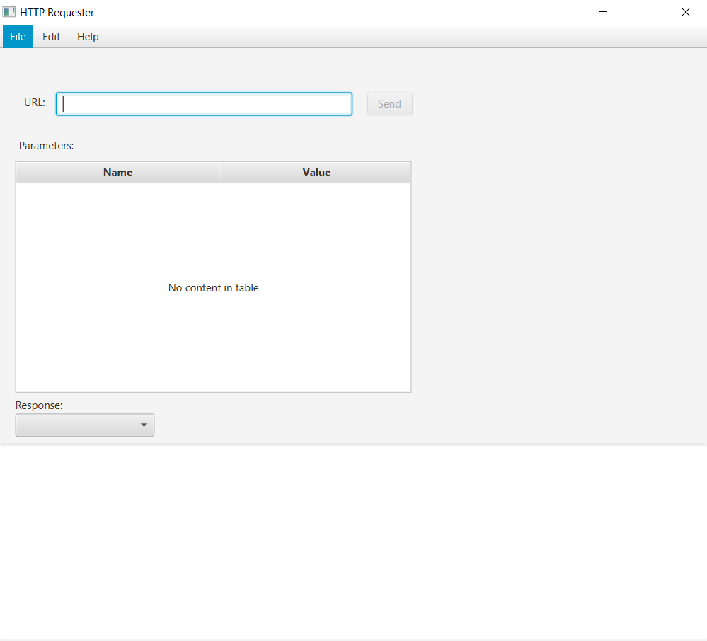
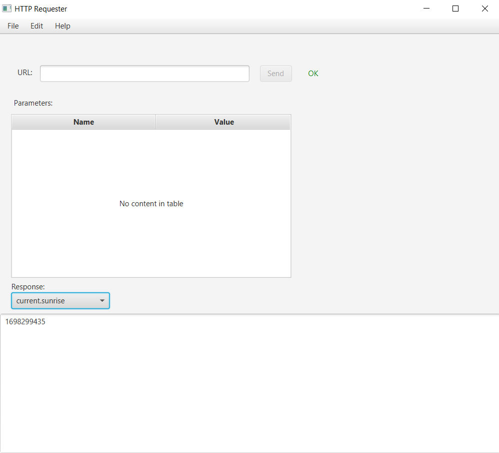
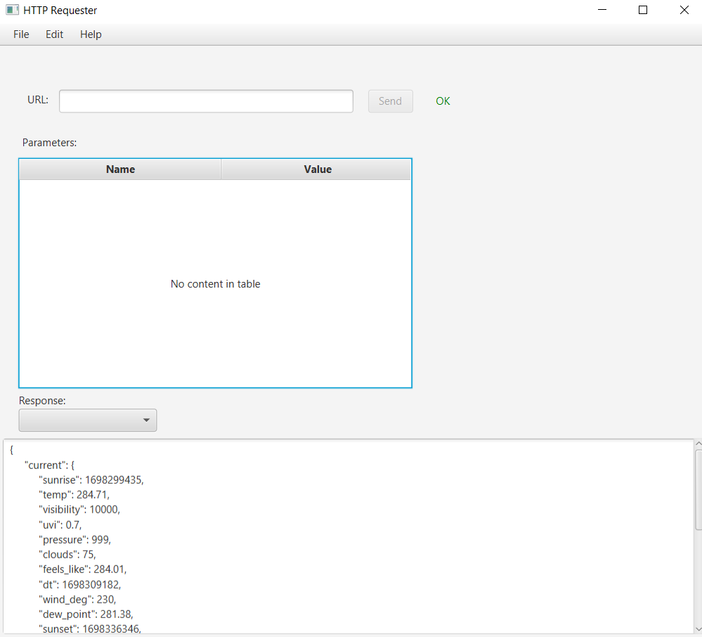

Projekt Weather API-Key Sorter mit JavaFx
Dieses Projekt hatte zum Ziel, eine Benutzeroberfläche mit Java und dem Framework JavaFX zu erstellen. Alle Informationen aus Java (Klassen, Methoden usw.) sollten in dieser Web-App verwendet werden. Gleichzeitig sollte ich zum ersten Mal Erfahrungen mit der Arbeit mit einer API sammeln. Das Programm funktioniert eigentlich sehr einfach: Wenn Sie das Repository herunterladen und die Datei "start.java" ausführen, öffnet sich ein kleines Fenster, in dem Sie eine URL eingeben können (funktioniert nur für Weather APIs). Wenn die eingegebene URL gültig ist, können Sie alle Parameter in der Dropdown-Liste unten auswählen. Mit diesem Programm habe ich gelernt, wie man mit APIs arbeiten kann.
Github Repo: Beispiel URL:
Beispiel URL:
https://api.openweathermap.org/data/3.0/onecall?lat=48.763016&lon=11.425039&exclude=minutely,hourly,daily,alerts&appid=889b48722656894e72fac7d0ad41ff3d   